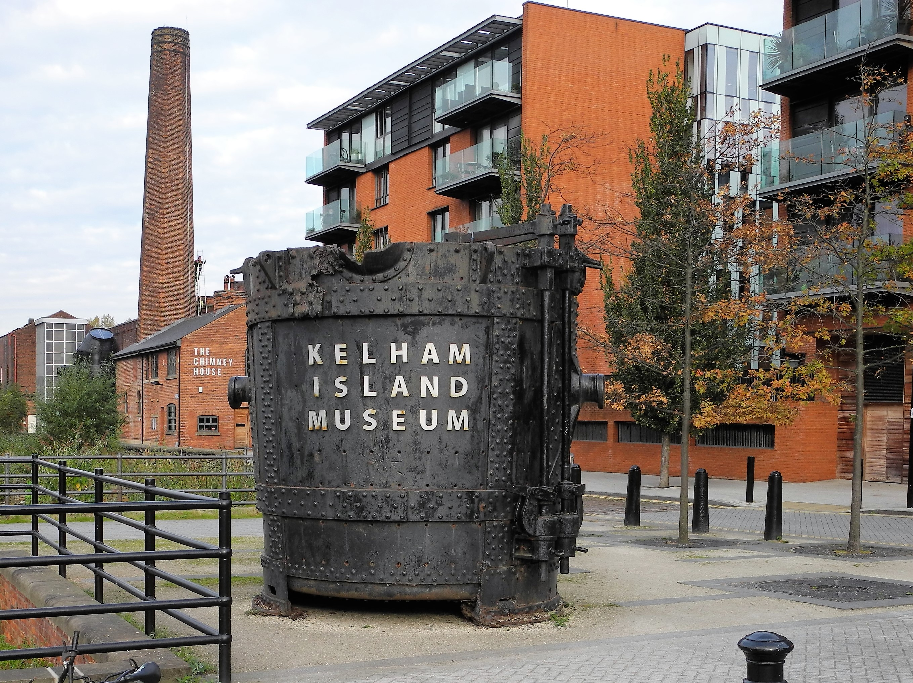
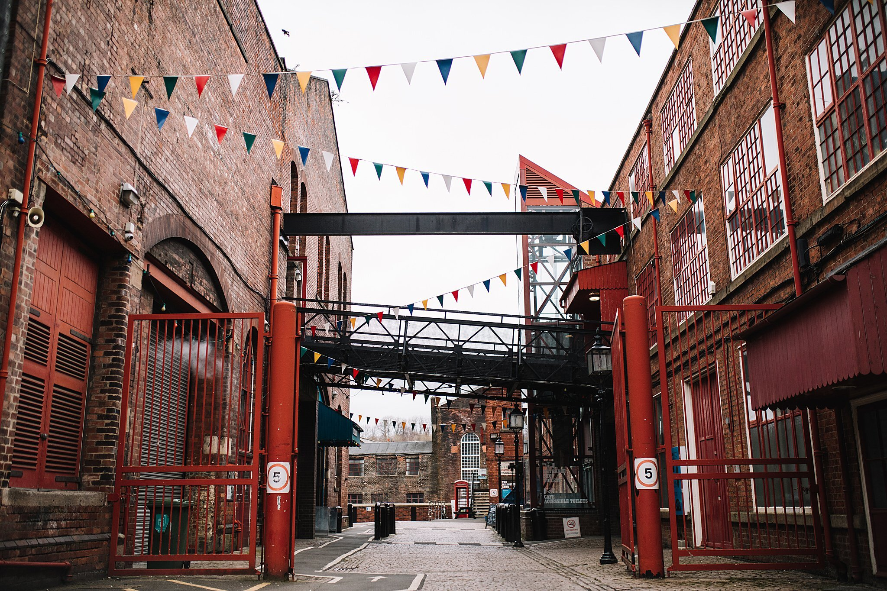
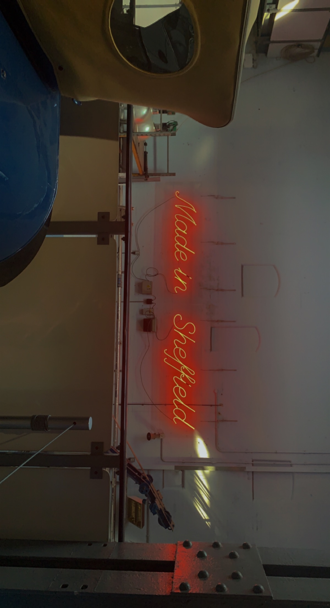

Introducing Sheffield Museums



Located in one of the city’s oldest industrial districts, the museum stands on a man-made island over 900 years old. Kelham Island Museum was opened in 1982 to house the objects, pictures and archive material representing Sheffield’s industrial story.
Our interactive galleries tell the story from light trades and skilled workmanship to mass production and what it was like to live and work in Sheffield during the Industrial Revolution.Follow the growth of the steel city through the Victorian Era and two world wars to see how steelmaking forged both the city of today and the world!
Sheffield Museums Trust is the independent charity that operates six of the city’s leading museums and heritage sites: Abbeydale Industrial Hamlet, Graves Gallery, Kelham Island Museum, Millennium Gallery, Shepherd Wheel and Weston Park Museum. Established in 2021, the charity cares for the city’s collections of art, human and industrial history, and natural science, alongside the Guild of St George’s John Ruskin collection and is home to the Ken Hawley Collection Trust’s Hawley Tool Collection.
We work with our communities to tell the remarkable story of Sheffield and its people, and celebrate its reputation for excellence in craft, making and innovation. Together with local, regional and national partners, we showcase home-grown creative talent and bring outstanding cultural experiences to the city.